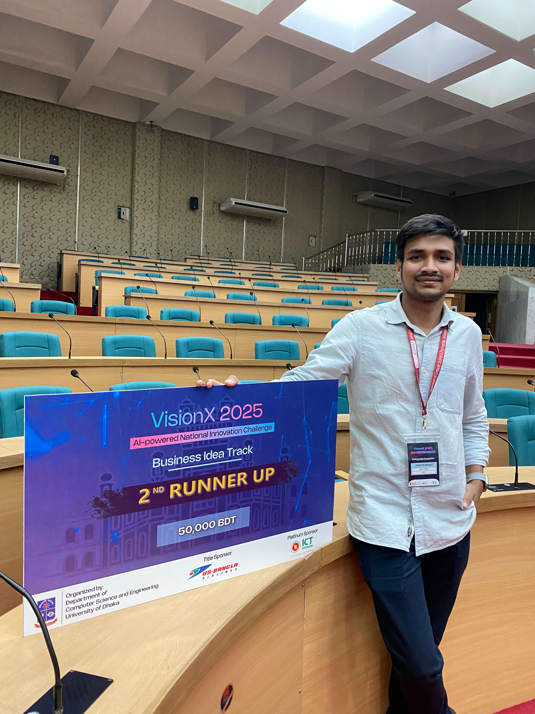

Achievements
Recognition and awards in engineering, robotics, and innovation.

Rice360 Global Health Tech Design Competition — SUST Team Qualifier
International health technology design competition semifinalist

SUST Innovation Hub Pre-Seed Funding — Team SignTalk
Awarded pre-seed funding for assistive communication technology

Youth Innovation Challenge Sylhet — SignTalk Winner
Divisional champion at Youth Startup Summit 2025

Team SignTalk International Recognition
DEI Award from Rice360 and international competition recognition

SightlineAI Assistive Eyewear Development
AI-powered wearable for real-time environment awareness

MindWell Mental Health Platform Launch
Open-source mental wellness platform with 393+ condition guides

Open Source Development Contributions
Active contributor to open-source engineering and developer tools
Press & Media
Team SignTalk and Rudra Sarker's work has been featured in national and international media. Read about our journey, achievements, and the impact of our technology.
Read Media Coverage & Achievements →